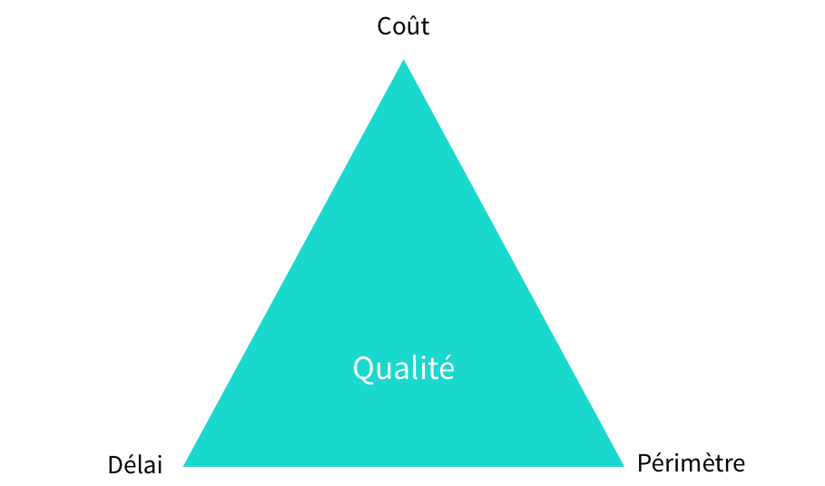

Petits livrables
pour grand projet
Qui suis-je ?
Freelance
https://twitter.com/glours
https://github.com/glours
Le triptyque Projet

Comment apprenons nous à gérer ce type de problèmatique ?
Prenons un exemple
Un workflow d'approbation d'achat
Au commencement ...

Workflow dont nous ne connaissons pas encore tous les états et transitions.
Les règles connues à ce jour pourront être modifiées ou supprimées.
Cascade
Les phases traditionnelles de développement sont effectuées simplement les unes après les autres ... un cycle en cascade exécute des phases qui ont pour caractéristiques :
- de produire des livrables définis au préalable ;
- de se terminer à une date précise ;
- de ne se terminer que lorsque les livrables sont jugés satisfaisants lors d'une étape de validation-vérification.
source : https://fr.wikipedia.org
Avantages
- Fire and Forget
Inconvénients
- Risque de retard
- Inadapté au changement
- Fourniture d'un livrable obsolète
- ...
Vous l'avez compris

Itératif
Le développement itératif implique de découper un projet en un certain nombre de cycles, ou itérations, au cours desquelles on prévoit de répéter les mêmes activités.
source : referentiel.institut-agile.fr
Avantages
- Livraisons régulières
- Centrer sur la livraison de valeur
- Repriorisation et changement à chaque itération
Inconvénients
- Gestion par lot
- mini-cycle en cascade
- Le changement durant une itération est compliqué
On se sent un peu plus ...

Incrémental
Le développement incrémental consiste à réaliser successivement des éléments fonctionnels utilisables, plutôt que des composants techniques.
source : referentiel.institut-agile.fr
Avantages
- Idéal pour la livraison en continue
- Centré sur la production de valeur
- Repriorisation et changement à chaque nouvel incrément
Inconvénients
- Assurer la cohérence technique des incréments
Livrer plus souvent ce qui est prêt

Je ne vous ai pas tout dit....

Itératif, en Agile, c'est aussi ...
Alistar Cockburn nous rappelle que
"Le développement itératif est une stratégie de remaniement (~rework) planifié dans lequel du temps est réservé pour réviser et améliorer certains aspects du système."
Itératif & Incrémental
Les petits pas vers le grand succès !

Questions ?